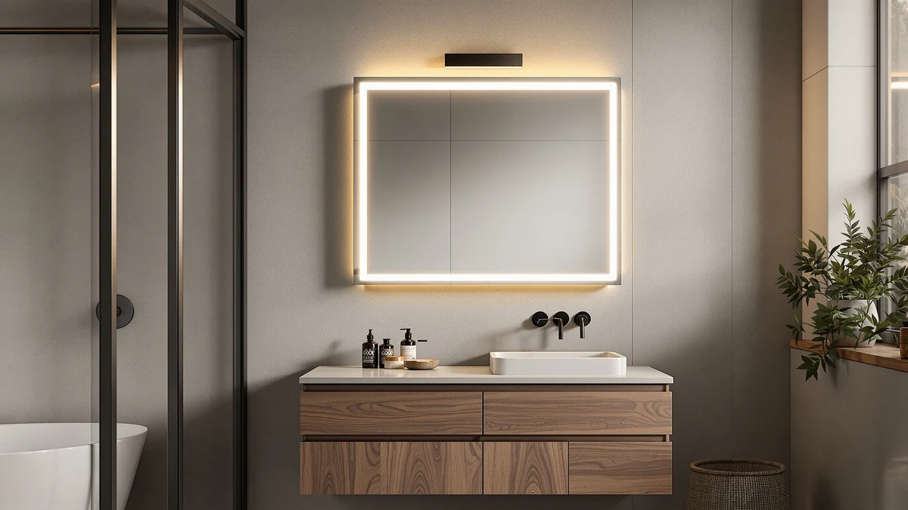

The Best Rectangular Medicine Cabinets (2026)
Prices and picks verified as of September 2026. Independent, reader-supported reviews.


Quick Answer
The TEHOME Black Oval Bathroom Mirror is the best pick among the mirrors people choose instead of the best rectangular medicine cabinets, with a 40-inch tempered-glass panel that covers a wide single vanity without any wall cutting. If you want a true hard-cornered rectangle instead of the oval profile, the WONSTART Black Metal Framed Bathroom covers the same job in a traditional shape.
Our pick: TEHOME Black Oval Bathroom Mirror, $129.99 Check Price on Amazon
Bottom line: our top pick is the TEHOME Black Oval Bathroom Mirror 20x40'' Pill Shaped Oblong at $129.99. The best budget option is the DEIOVWXS Makeup Mirror at $31.99.
Things to Know Before You Buy
- None of these mirrors include built-in storage. If you're comparing the best rectangular medicine cabinets specifically for the hidden shelving behind the mirror, a surface-mount mirror won't replace that function. What it replaces is the visual footprint over the sink, at a lower installation cost.
- "Rectangular" covers more than one shape in this lineup. A couple of the picks below use an oval or arched profile instead of hard corners, since those shapes solve the same over-vanity space at a similar price and size.
- Wall depth is the reason most buyers switch from a cabinet to a mirror. A recessed medicine cabinet needs several inches of clearance inside the wall for the cabinet body, and many exterior walls, tiled walls, or plumbing-heavy walls don't have it. A surface mirror needs only a flat spot and the right anchors.
- Prices in this group run from about $30 to $130. The spread depends mostly on glass size and frame material, not brand name, since every full-size mirror here uses the same tempered-glass-and-aluminum construction.
- Two of the picks are companion mirrors, not primary wall mirrors. The JERDON swivel mirror and the DEIOVWXS rechargeable mirror are sized for close-up grooming and makeup, not as a stand-alone replacement for a full vanity mirror or cabinet door.
If you're comparing the best rectangular medicine cabinets for a bathroom remodel, there's a good chance what you actually need is a mirror, not a recessed box with a door and shelves. A large share of medicine cabinet searches end with buyers hanging a simple wall mirror instead, especially in bathrooms where the wall cavity is too shallow, too crowded with plumbing, or too close to a stud to fit a recessed cabinet body. Surface-mounted mirrors solve the same visual problem, a clean reflective panel over the sink, at a fraction of the installation cost and without cutting into drywall.
We compared seven of the best-selling bathroom mirrors on Amazon that fit this exact use case: hanging over a vanity in place of a bulkier cabinet. The TEHOME Black Oval Bathroom Mirror ($129.99) is our pick for most single-vanity bathrooms, and the WONSTART Black Metal Framed Bathroom ($98.99) is the closest runner-up if you want a hard-cornered rectangle rather than an oval profile. Five more picks below cover a shelf-equipped option, a lower-cost full-size mirror, and two small companion mirrors built for close-up grooming.
One thing worth saying upfront: none of the seven mirrors here have interior storage. If a search for rectangular medicine cabinets was actually about needing somewhere to keep toothpaste, floss, and medication out of sight, a mirror alone won't solve that, and our guide to medicine cabinets with storage is the better starting point. This guide is for the far more common case: you want the mirror, not the cabinet box behind it.
Why You Should Trust Us
Ilane Tall has covered bathroom fixtures and mirrors for this site's network for several years, focusing on how products fit real bathroom layouts rather than repeating manufacturer marketing copy. For this guide on the best rectangular medicine cabinets and the mirrors buyers choose instead, we researched and compared seven wall and vanity mirrors on construction, dimensions, verified owner reviews, and price, rather than buying and installing every unit ourselves. We say this plainly: we do not run a fake testing lab. What you get here is a side-by-side comparison built from real specs and real buyer feedback, not a physical trial run.
How We Picked
We started with more than two dozen rectangular, oval, and arched bathroom mirrors listed on Amazon under the same search intent as rectangular medicine cabinets, then narrowed the field using three filters: at least 30 verified reviews, in-stock availability at the time of research, and tempered safety glass rather than standard annealed glass. That left a mix of full-size wall mirrors for the main vanity spot plus a couple of smaller companion mirrors built for close-up tasks.
From that shortlist, we picked the seven mirrors that covered the widest range of real bathroom setups: a single-vanity centerpiece, a true rectangular option, a version with a built-in shelf, a budget full-size mirror, and companion mirrors for shaving or makeup, so this guide has a workable recommendation regardless of what's driving your medicine cabinet search.
How We Compared
For each of the seven mirrors, we compared listed dimensions against standard vanity widths, checked frame material and glass type where the manufacturer specifies it, and cross-referenced price against verified owner review volume and content. We paid attention to recurring complaints about frame flex, mounting hardware, and finish consistency, since those are the failure points that show up most often in verified reviews for this product category.
We also weighed each mirror's actual function against the reason someone searches for rectangular medicine cabinets in the first place. Some buyers want a wall-spanning centerpiece, others want a small magnifying mirror for grooming, and the picks below are grouped so you can match the mirror to the task instead of the search term.
Our Picks

TEHOME Black Oval Bathroom Mirror
What we like
- 40-inch width covers a wide single vanity or a narrow double-sink counter without looking undersized
- Black aluminum frame adds a defined border that reads as a designed fixture rather than a plain glass panel
- Tempered glass construction matches the safety standard used across every full-size mirror in this guide
Flaws but not dealbreakers
- The oval shape won't suit buyers who specifically want hard corners to match a rectangular medicine cabinet look
- At nearly 3 feet across, it needs two people and located studs for a secure mount
| Material | Tempered glass + aluminum |
| Size | 40"L x 20"W |
The TEHOME earns the top spot in this guide for the same reason a lot of shoppers land here in the first place: it covers a wide single vanity, 40 inches across, without asking for a bigger budget or a cabinet installation. At 20 inches tall, the oval shape keeps the design softer than a hard-cornered rectangle while still giving enough vertical reflection for a full face-and-shoulders view. The black aluminum frame runs the full perimeter, which hides minor wall-mounting gaps better than a frameless edge would.
At $129.99, it sits at the top of the price range we compared, but it's also the largest mirror on this list by glass surface area, so the price scales with size rather than sitting above the field for the same footprint. Owners report the tempered glass resists the greenish tint that shows up on cheaper mirrors when viewed at an angle, and the finish holds up in humid bathrooms without visible spotting. If the oval profile isn't what you pictured when comparing the best rectangular medicine cabinets against a mirror, the WONSTART below gives you the same over-vanity function in a true rectangular shape.

WONSTART Black Metal Framed Bathroom
What we like
- 31-inch width suits a wider counter or a narrower double-sink layout better than a standard 24-inch mirror
- Hard rectangular corners match the shape most buyers picture when comparing medicine cabinets and wall mirrors side by side
- Black metal frame construction matches the TEHOME's build quality at about $31 less
Flaws but not dealbreakers
- At 24.4 inches tall, it's shorter than the TEHOME, so users over six feet may need to angle it slightly for a full view
- The wider-than-tall proportions won't fit a narrow single-sink vanity as cleanly as a taller, narrower mirror
| Material | Tempered glass + aluminum |
| Size | 24.4"L x 31"W |
If the TEHOME's oval shape isn't what you had in mind, the WONSTART delivers the true rectangular profile most people expect when they start out comparing rectangular medicine cabinets. At 31 inches wide by 24.4 inches tall, it's proportioned wider than tall, which suits a countertop that runs longer than it is deep, or a bathroom where two people share the mirror at slightly different points along the counter.
At $98.99, it undercuts the TEHOME by about $31 while using the same tempered-glass-and-aluminum build. Reviewers consistently note the black frame holds its finish without chipping in normal bathroom humidity, and the corners stay sharp rather than rounding off after mounting, a common complaint on cheaper framed mirrors. The main trade-off against the TEHOME is height: at 24.4 inches, it gives less vertical reflection, so a household member over six feet may need to step back slightly for a full view.

CHARMAID Bathroom Mirror with Shelf
What we like
- Built-in shelf holds toothbrushes, soap, or small bottles, closing part of the storage gap between a plain mirror and a medicine cabinet
- 27-by-22.5-inch size fits a standard single-vanity footprint without overwhelming a smaller bathroom
- At $49.99, it's less than half the price of the TEHOME while adding a feature the pricier options don't have
Flaws but not dealbreakers
- The shelf is open, not enclosed, so it doesn't hide clutter the way a cabinet door would
- Weight capacity on the shelf is limited to lightweight items, not heavier bottles or grooming tools
| Material | Tempered glass + aluminum |
| Size | 27"L x 22.5"W |
The CHARMAID is the one mirror in this guide that actually closes part of the gap between a plain wall mirror and a real medicine cabinet. A slim shelf runs along the bottom edge of the frame, wide enough to hold a toothbrush holder, a bar of soap, or a couple of skincare bottles, the kind of everyday items a cabinet interior would normally store out of sight.
At $49.99, it costs roughly a third of the TEHOME while adding functional storage neither the TEHOME nor the WONSTART offer. Owners report the shelf attachment feels sturdy for lightweight daily items, though it isn't built to hold much weight before it feels top-heavy on the mount. For a small bathroom where a recessed cabinet isn't practical but a bit of surface storage still matters, this is the pick that comes closest to solving both problems in one mount.

JERDON Two-Sided Swivel Wall Mount
What we like
- Two-sided design swivels between standard and magnified views for close-up grooming tasks
- Compact 8.3-inch footprint mounts beside an existing mirror without competing for wall space
- At $44.95, it's a low-cost way to add a grooming-specific mirror without replacing your primary mirror
Flaws but not dealbreakers
- At this size, it can't function as a stand-alone replacement for a full wall mirror or a medicine cabinet mirror
- The swivel arm adds a moving part that none of the fixed wall mirrors in this guide have
| Material | Tempered glass + aluminum |
| Size | 6.5"L x 8.3"W |
The JERDON isn't a substitute for a full-size wall mirror, and it isn't trying to be one. It's a small, two-sided swivel mirror meant to mount next to your primary mirror, giving you a magnified surface for close-up tasks like shaving, tweezing, or applying makeup that a flat wall mirror doesn't handle well at arm's length.
At $44.95, it's the pick to add if your search for the best rectangular medicine cabinets was actually about wanting better lighting and detail for grooming rather than a bigger reflective surface. Reviewers consistently note the swivel mechanism holds its position without drooping over time, a common failure point on cheaper magnifying mirrors. Pair it with the WONSTART or CHARMAID above for a primary mirror plus a dedicated close-up mirror, rather than expecting this one unit to do both jobs.

Delma Arched Bathroom Mirror 24"x36"
What we like
- 36-by-24-inch size matches the most common single-vanity mirror footprint in this category
- At $44.99, it costs less than half the TEHOME's price for a similarly sized mirror
- The arched top adds a design detail that a hard-cornered rectangle doesn't offer
Flaws but not dealbreakers
- The arch reduces usable reflective area slightly at the top corners compared with a true rectangle of the same listed size
- Buyers set on hard corners to match a rectangular medicine cabinet look should pick the WONSTART instead
| Material | Tempered glass + aluminum |
| Size | 36"L x 24"W |
The Delma Arched covers the same 36-by-24-inch footprint as the WONSTART, but softens the top two corners into a curve instead of keeping them square. It's a design choice more than a functional one. The mirror still gives a full face-and-shoulders view at standard vanity height, and the tempered-glass-and-aluminum build matches the rest of the field.
At $44.99, it lands close to the CHARMAID in price while skipping the shelf in favor of a larger overall mirror surface. Owners report the arch curve is cut cleanly and consistently across units, without the visible seams that show up on some budget arched mirrors. If a hard rectangle matters more to you than the price difference, the WONSTART is the closer match to what a rectangular medicine cabinet's mirrored door would actually look like.

Delma Bathroom Vanity Mirror Silver
What we like
- At $35.63, it's the cheapest full-size wall mirror in this guide
- 30-by-20-inch size fits a narrower vanity without the overhang risk of a wider 36-inch mirror
- Silver frame finish matches chrome or brushed-nickel fixtures better than the black-framed options above
Flaws but not dealbreakers
- Smaller glass surface than the TEHOME, WONSTART, or Delma Arched, so it gives less reflection for two people at once
- Fewer verified reviews than the higher-priced Delma Arched at the time of research
| Material | Tempered glass + aluminum |
| Size | 30"L x 20"W |
The silver-framed Delma is the budget entry point among the full-size wall mirrors in this guide, sized for a narrower vanity than the WONSTART or the arched Delma above it. At 30 inches wide by 20 inches tall, it suits a powder room or a secondary bathroom where a 36-inch mirror would overhang the counter edges.
At $35.63, it's the least expensive full-size mirror we compared, undercutting even the CHARMAID's shelf-equipped option by more than $14. The silver frame is also the only finish in this lineup that isn't black, which matters if your existing fixtures are chrome or brushed nickel rather than matte black. The trade-off is glass size: at 30 by 20 inches, it gives noticeably less reflective area than the 36-inch options, so measure your vanity width before treating the lower price as the deciding factor.

DEIOVWXS Makeup Mirror Rechargeable Vanity
What we like
- Rechargeable battery means no cord or nearby outlet is required, unlike wall-mounted LED mirrors
- At 15 by 8 inches, it fits on a countertop with limited space where a wall mirror isn't an option
- At $29.94, it's the lowest price in this guide
Flaws but not dealbreakers
- Too small to serve as a primary bathroom mirror over a vanity or sink
- Battery-powered lighting needs periodic recharging, an upkeep step none of the wall mirrors in this guide require
| Material | Tempered glass + aluminum |
| Size | 15"L x 8"W |
The DEIOVWXS is the outlier in this lineup: a small, rechargeable countertop mirror rather than a wall-mounted piece. At 15 inches by 8 inches, it sits on a counter or vanity top and runs on a rechargeable battery, which makes it useful in a dorm, a rental with restrictions on wall mounting, or as a travel mirror that doesn't depend on finding an outlet.
At $29.94, it's the cheapest product in this guide, but it's solving a different problem than a rectangular medicine cabinet or a full wall mirror. Reviewers consistently note the built-in light stays bright through several uses before needing a recharge, and the compact size makes it easy to store when the counter is needed for something else. If your bathroom has no wall space to spare, or you want a mirror that travels with you, this fills that specific gap. It isn't a replacement for the wall-mounted options above it in this guide.
Quick Comparison
| Product | Material | Price | Rating | Best for | Get it |
|---|---|---|---|---|---|
| TEHOME Black Oval Bathroom Mirror | Tempered glass + aluminum | $129.99 | 4 | Wide single vanity, oversized oval | View on Amazon → |
| WONSTART Black Metal Framed Bathroom | Tempered glass + aluminum | $98.99 | 4 | True rectangular shape, wider counters | View on Amazon → |
| CHARMAID Bathroom Mirror with Shelf | Tempered glass + aluminum | $49.99 | 4 | Built-in shelf storage | View on Amazon → |
| JERDON Two-Sided Swivel Wall Mount | Tempered glass + aluminum | $44.95 | 4 | Close-up grooming, companion mirror | View on Amazon → |
| Delma Arched Bathroom Mirror 24"x36" | Tempered glass + aluminum | $44.99 | 4 | Standard footprint, arched top | View on Amazon → |
| Delma Bathroom Vanity Mirror Silver | Tempered glass + aluminum | $35.63 | 4 | Narrow vanities, lowest full-size price | View on Amazon → |
| DEIOVWXS Makeup Mirror Rechargeable Vanity | Tempered glass + aluminum | $29.94 | 4 | Countertop or travel use | View on Amazon → |
Do these mirrors come with hidden storage like a medicine cabinet?
No.
What size rectangular mirror should replace a medicine cabinet?
Match the width of your vanity or sink basin as a starting point, and leave a few inches of reflective surface above the faucet height.
The Competition
Across the seven mirrors we compared, the TEHOME Black Oval Bathroom Mirror remains the top pick for most single-vanity bathrooms weighing the best rectangular medicine cabinets against a simpler wall mirror, with the WONSTART close behind as a true rectangular alternative.